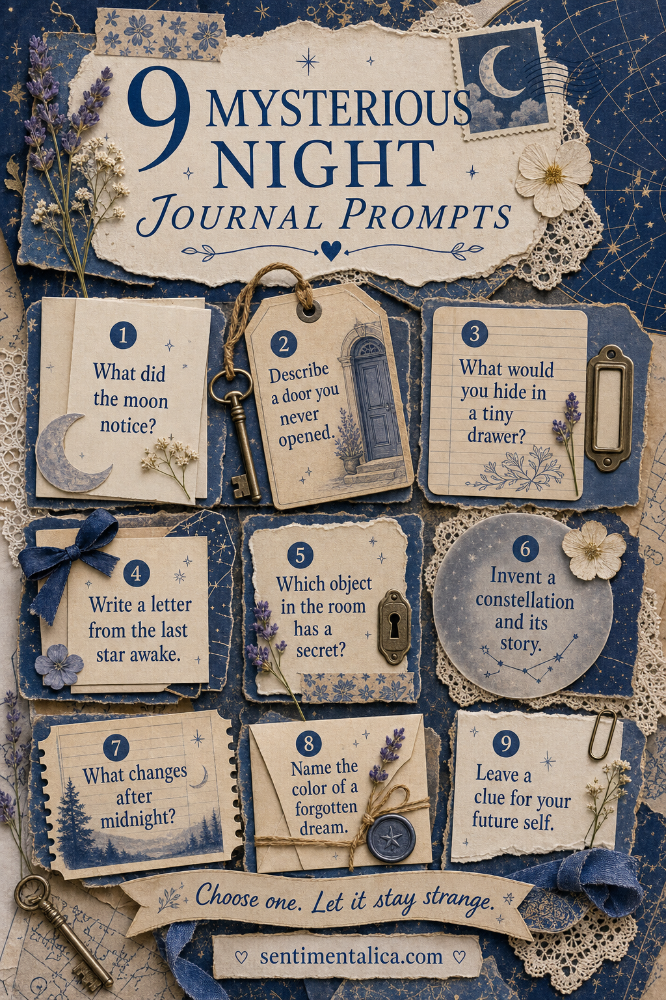
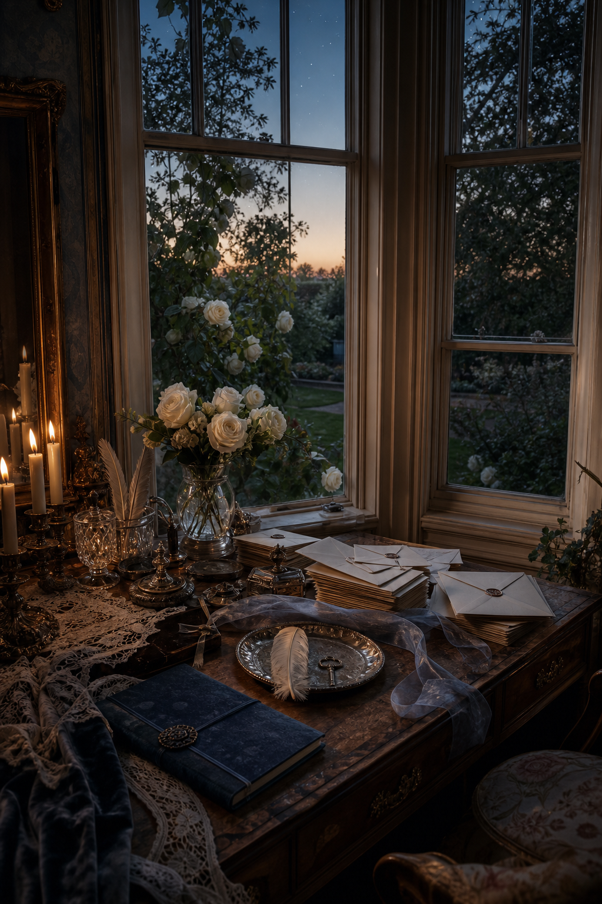

Night writing does not have to uncover a profound truth. Sometimes it can simply make the ordinary room feel larger: the window becomes a frame, a closed door holds a possibility, and a familiar object acquires a secret life.

What did the moon notice?
Describe your day from a distant, patient point of view. The moon may notice which window stayed lit, what you carried home, or the moment you finally became quiet. Write in three short observations rather than a full story.
Describe a door you never opened
It can be real or invented. Note its color, handle, age, and the sound behind it. Then write one reason you walked past. Resist revealing what is inside; uncertainty is the useful part of this prompt.
What would you hide in a tiny drawer?
Choose something small enough to fit: a name, key, scent, hour, unfinished wish, or color. Draw the drawer around the word and add a label that only partly explains it.

Write from the last star awake
Begin, I stayed because… Let the star address the sleeping city, one person, or another star already gone. This prompt works beautifully as a short letter tucked into an envelope on the page.
Which object in the room has a secret?
Choose the least dramatic object you can see: a cup, lamp, drawer pull, folded blanket, or book. Invent what it remembers. Two precise details will feel more mysterious than a complicated supernatural explanation.
Invent a constellation and its story
Scatter seven dots, connect them, and turn the shape until it suggests something. Name it after an action or feeling—The Returning Thread, The Keeper of Small Doors, The Cup Left Warm. Write three lines about how it entered the sky.
What changes after midnight?
List five things that feel different even when they look the same. Include sound, temperature, shadow, distance, and thought. This can become a poem without requiring you to call it one.
Name the color of a forgotten dream
Mix or choose a color first, then give it a sensory name: rain-glass blue, candle-smoke violet, sleeping-rose grey. Describe what the color remembers even if you cannot remember the dream.
Leave a clue for your future self
Write one sentence you want to encounter later, fold it, and date the outside. Add a simple instruction such as “open on the first cold night” or “open when the jasmine blooms.” Keep the promise gentle.
Give the writing a night palette
Use warm ivory for most of the page, then choose one darkness—navy, aubergine, or charcoal. Add mist blue or dusty rose as the middle tone and reserve silver or candle gold for one tiny clue. The light paper keeps late-night writing readable, while the darker edge creates atmosphere without demanding a fully decorated spread.
Turn one answer into a pocket
If a response feels private, write it on a separate scrap and fold it into a small envelope. Place the prompt on the outside and the date beneath the flap. You can leave the answer sealed forever or open it when the page no longer feels close. The choice itself becomes part of the journal.
Try only one prompt per evening. A mysterious page needs room around the words: dark paper at one edge, a silver line, a small key shape, or an envelope left closed. The unfinished feeling is part of the page.
Find more quiet journal prompts for evenings when you want somewhere else to go.